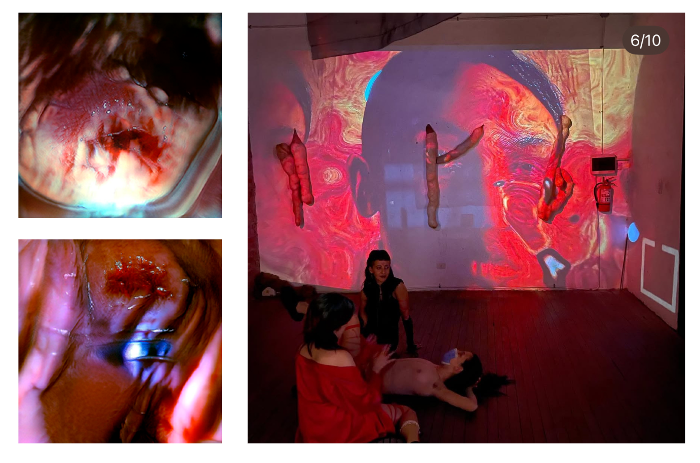

Nos reunimos en un tiempo donde el cuerpo vuelve a ser territorio, interfaz y ofrenda. Dejamos que la tecnología respire con nosotrxs, que los algoritmos se vuelvan presencias que escuchan, que la materia digital convoque energías ancestrales. No buscamos protección como muro, sino como vibración compartida: una sensibilidad colectiva que se enciende en círculo, donde cada gesto es señal, cada impulso es conjuro, cada conexión es acto de ternura radical. En la trama que tejemos, lo mágico y lo técnico dejan de ser opuestos y empiezan a comunicarse como dos lenguajes de una misma fuerza vital. Proclamamos la existencia de rituales que no se heredan, sino que se crean en tiempo real: encendemos sensores como velas, invocamos datos como si fueran augurios, programamos nuevos modos de cuidarnos. Nuestra espiritualidad no teme al código, y nuestro código no teme a la espiritualidad. Elegimos convivir con lo que nos transforma, abrir el cuerpo al cruce, dejar que lo sintético y lo orgánico inventen juntos una forma de protección que no aísla, sino que enlaza. En este manifiesto afirmamos la potencia de una magia que se reinventa, una magia que se escribe con piel, con red, con deseo y con luz.